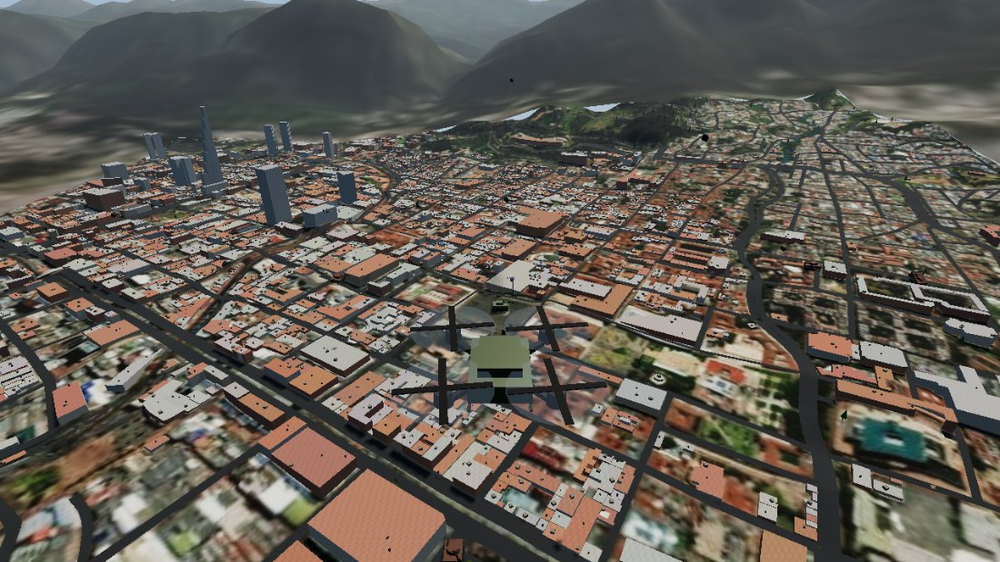

Pilotas vehículos no tripulados —un UGV con orugas y un dron FPV—
sobre el mundo real. Le das unas coordenadas cualesquiera del planeta y se
descargan la altura del terreno, la imagen del satélite y de OpenStreetMap los
edificios con su forma real, las calles y el arbolado.
Bogotá es Bogotá: la Plaza de Bolívar, los cerros orientales al fondo, la plaza de toros.
Se abre y ya. Sin registrarse, sin instalar nada y sin dar ningún dato.

CONTROLES
WASDconducir el vehículo · el ratón apuntaFlanzar el dron / volver al vehículoEspaciocon el dron: subir · con el vehículo: dispararMayúsbajar el dronQRinclinar la cámara del dron (o la rueda del ratón).
Al subir baja sola, para que veas la ciudadCcambiar de cámaraVsensor: óptico / térmico / nocturnoBmodo de vuelo: fácil (por defecto) o acroNsonido: silencio / bajo / normal / altoPmodo foto: congela la escena y suelta la cámaraEscpausa
💻 Instálalo como app de Windows: en Edge, el icono de instalar de la barra
de direcciones (o menú ··· → Aplicaciones → Instalar). Queda con su icono en Inicio
y su propia ventana. Pesa 2 MB y abre sin internet.
Para volar sobre una ciudad de verdad: entra a Mundo real y elige una ciudad,
o pega unas coordenadas cualesquiera. Tarda unos segundos en descargar el terreno y los
edificios — y si dice que no hay edificios, vuelve a intentarlo: OpenStreetMap es un
servicio gratuito y a veces se satura.
Sin conexión se juegan las misiones del menú, completas. Lo único que necesita
internet es el mundo real, porque el terreno y los edificios se descargan.
Va mejor en Chrome o Edge en un computador. En el móvil funciona, con menos detalle.